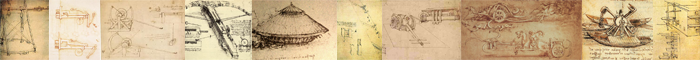
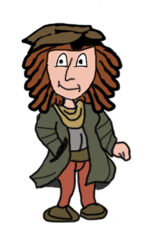

A pesar de que únicamente los inventos militares fueron los que llevaron a sus patrocinadores a brindarle apoyo económico, él se las ingenió para desarrollar paralelamente principios básicos de ingeniería general.
La mayoría de los inventos de Leonardo Da Vinci no fueron llevados a la práctica por considerarse que superaban las posibilidades de la técnica de la época, a pesar de que Leonardo estudió la mayoría de sus proyectos cuidando los detalles y resolviendo las dificultades de la construcción.

Sin duda que sus inventos no surgieron al azar, no todos al menos. Seguramente, todos fueron resultado de algo.
Por ejemplo, estos cinco:
- La escafandra.
- El cañón de tres troneras.
- El automovil.
- Los engranajes.
- La máquina de asedio.

¿Cuál de los siguientes habrá sido el impulso, razón, motivación, etcétera para el invento de estos elementos?
♦ La JXUwMDNkJXUwMDE2JXUwMDEwJXUwMDAyJXUwMDA3JXUwMDA3JXUwMDBmJXUwMDBhJXUwMDE2JXUw
MDEz
surgió de la fascinación de Da Vinci por el mar; espoleó muchos diseños encaminados a la exploración acuática.
♦ El JXUwMDNiJXUwMDAyJXUwMDkwJXUwMDAyJXUwMDlk
JXUwMDNjJXUwMDAx
JXUwMDZi
JXUwMDJjJXUwMDA2JXUwMDFkJXUwMDAxJXUwMDBiJXUwMDE3JXUwMDEzJXUwMDEy
nace por ser Leonardo un inventor necesitado, sin grandes influencias en el poder, más allá de ser más un pensador que un combatiente; el poco aprecio de Da Vinci por los conflictos no lo detuvo a la hora de imaginar diseños para la guerra y así sobrevivir.
♦ El JXUwMDM5JXUwMDE0JXUwMDAxJXUwMDFiJXUwMDAyJXUwMDAyJXUwMDE5JXUwMDFmJXUwMDA1JXUw
MDQw
según los diseños de Da Vinci, apunta a un vehículo autopropulsado revolucionario para su época. No pretendía sustituir al caballo, "máquina perfecta" según él, sino que buscaba acortar las distancias con un elemento que podría ser más económico que un equino.
♦ Los JXUwMDNkJXUwMDBiJXUwMDA5JXUwMDE1JXUwMDEzJXUwMDBmJXUwMDBmJXUwMDBiJXUwMDBmJXUw
MDE2JXUwMDVm
es decir, una rueda dentada-tornillo sin fin en donde una manivela mueve un elemento que llamaremos tornillo sin fin, el que a su vez mueve la rueda unida a él para subir elementos pesados o delicados a alturas difíciles o inalcanzables o para mover cosas o para hacer funcionar distintas máquinas.
♦ La JXUwMDM1JXUwMDhjJXUwMDkwJXUwMDA0JXUwMDFjJXUwMDA3JXUwMDBm
JXUwMDNjJXUwMDAx
JXUwMDM5JXUwMDEyJXUwMDE2JXUwMDAxJXUwMDBkJXUwMDA2
surge de la preocupación por la defensa de los muros de una ciudad asaltada por un enemigo, cuestión que era habitual en las guerras y muy difícil de contrarrestar.